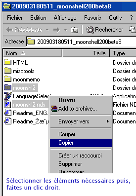
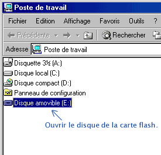
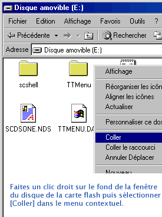
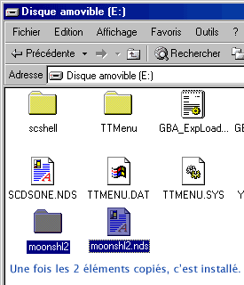
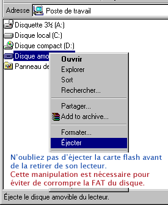

Méthode d'installation manuelle
Veuillez suivre les instructions ci-dessous.
1. Copie des éléments nécessaires
2. Ouverture du disque de la carte flash
3. Poser les éléments copiés sur la carte flash
4. Vérification de la copie
5. Ejection de la carte flash
1. Copie des éléments nécessaires

Note : Le fichier Moonshl2.nds doit être patché DLDI. Appliquez le patch manuellement si votre linker ne le fait pas automatiquement.
2. Ouverture du disque de la carte flash

3. Poser les éléments copiés sur la carte flash

4. Vérification de la copie

5. Ejection de la carte flash
